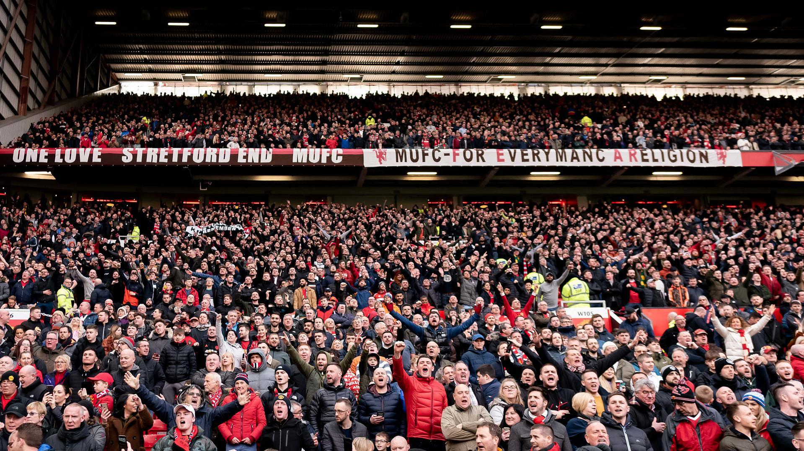

The Red Devils
Manchester United
A club with a remarkable history, legendary players, dramatic comebacks, and a global community of supporters. Supporting Manchester United means standing by the club through its highs and lows and celebrating the moments that make football unforgettable.
Visit the official website ↗